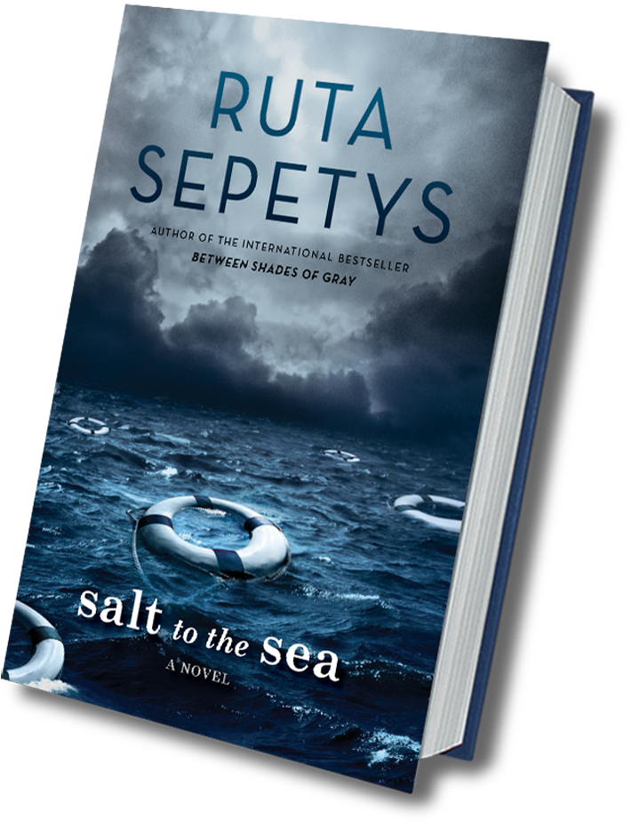

The author of Between Shades of Gray returns to WWII in this epic novel that shines a light on one of the war's most devastating, yet unknown, tragedy.

and thousands of refugees are on a desperate trek toward freedom, almost all of them with something to hide. Among them are Joana, Emilia, and Florian, whose paths converge en route to the ship that promises salvation, the Wilhelm Gustloff. Forced by circumstance to unite, the three find their strength, courage, and trust in each other tested with each step closer toward safety.
Click here to read and excerpt.
videos tbd